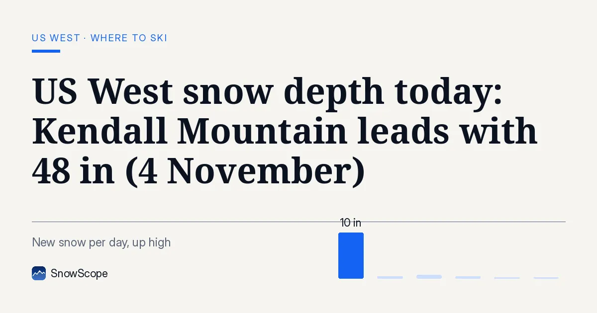
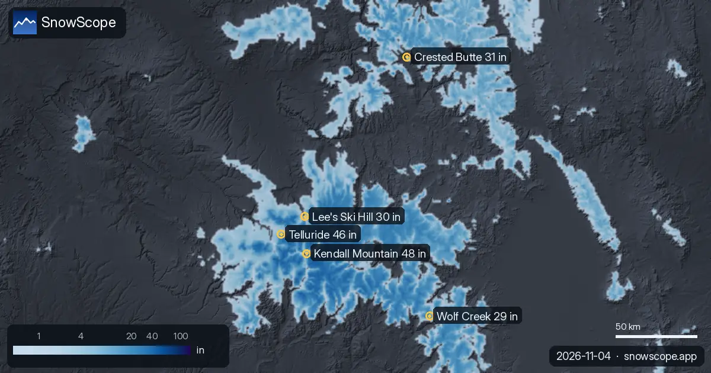

US West snow depth today: Kendall Mountain leads with 48 in (4 November)
Kendall Mountain holds the deepest snow in the US West right now: 48 in (122 cm) across its upper slopes on 4 November. Telluride sits close behind at 46 in (118 cm), and while most other resorts lag far further back, the region still has snow at 149 of its 195 ski areas.
See the live snow forecast for Kendall Mountain in the SnowScope appSnow depth, powder alerts and the 3D map, free.
Where the snow is thickest
Kendall Mountain's lead is real but narrow: only 2 in (4 cm) separate it from Telluride. Third place goes to Crested Butte with 31 in (79 cm), then Lee's Ski Hill at 30 in (77 cm), and Wolf Creek at 29 in (73 cm). The drop-off is steep after the top two.
What makes Kendall and Telluride stand out is not just depth but their height. Telluride's upper slopes sit at 12,507 ft (3,812 m), where SnowScope shows 38 in (97 cm). At Kendall Mountain's 9,528 ft (2,904 m) top, the snow is shallower but covers a smaller area that's easier to manage early in the season.
| Resort | Snow depth | New snow, 72 h | Coming, next days | Top |
|---|---|---|---|---|
| Kendall Mountain | 48 in (122 cm) | 11 in (28 cm) | 0 in (1 cm) | 9,528 ft (2,904 m) |
| Telluride | 46 in (118 cm) | 12 in (31 cm) | 1 in (2 cm) | 12,507 ft (3,812 m) |
| Crested Butte | 31 in (79 cm) | 6 in (14 cm) | 3 in (7 cm) | 11,444 ft (3,488 m) |
| Lee's Ski Hill | 30 in (77 cm) | 11 in (27 cm) | 1 in (2 cm) | 7,943 ft (2,421 m) |
| Wolf Creek | 29 in (73 cm) | 9 in (22 cm) | 1 in (2 cm) | 11,762 ft (3,585 m) |

The vertical story at Telluride
Telluride shows what altitude does for snow survival. At mid-mountain (10,620 ft / 3,237 m) SnowScope counts 8 in (21 cm), already half the top total. Drop to the base at 8,734 ft (2,662 m) and snow almost vanishes at 1 in (3 cm). This spread means skiers have choices: hunt high for depth, or accept thin cover lower down.
Kendall Mountain is simpler: its narrow vertical range means less choice but also less pressure on any single slope. Its base sits only 90 ft (27 m) below its top.
How this season compares
Telluride is off to a strong start. Normal for early November there is just 4 in (11 cm).
Kendall Mountain looks average. At 9,413 ft (2,869 m), today's 2 in (4 cm) is close to normal (2 in / 5 cm for the date). It is deeper than 23 of the past 46 winters—not remarkable, but not unusual.
Crested Butte's mid-slopes tell a warning: at 10,285 ft (3,135 m) SnowScope shows zero snow, well below the usual 5 in (12 cm). Only 1 of the past 46 seasons has been this thin at this point.
What stations on the ground say
Three high-altitude stations offer ground truth. Rat Creek at 11,680 ft (3,560 m) measured 26 in (66 cm) on 1 November, with 9 in (23 cm) falling in the previous 24 hours. Red Mountain Pass at 11,060 ft (3,371 m) also had 24 in (61 cm), but recorded 11 in (28 cm) of fresh snow—the most aggressive snow day of the three. Beartown at 11,581 ft (3,530 m) matched Rat Creek's total at 26 in (66 cm) but added only 2 in (5 cm) of new snow.
The stations confirm that high ground has accumulated snow, but resorts lower down may have less.
What comes next
By 7 November the SnowScope forecast offers modest gains: Crested Butte will add 3 in (7 cm), Telluride 1 in (2 cm), and Lee's Ski Hill 1 in (2 cm). None of these will shift the ranking.
A freeze-thaw risk appears on 5 November at Kendall Mountain. The freezing level that day reaches 5,643 ft (1,720 m) to 11,188 ft (3,410 m)—above the resort's 9,528 ft (2,904 m) top. Rain or wet snow will fall on every slope, which means the snowpack could become heavy and unstable before it refreezes at night.
Snow maps change daily. Check again the day before you travel.
Tips for skiers
- Kendall Mountain and Telluride have the most snow, but neither resort's status is confirmed here. Visit their websites to check lift schedules and opening dates before you drive.
- Early-season snow is thin and rocks hide close below the surface. Stay on groomed, open runs and avoid side hits and cliff zones.
- North-facing slopes keep snow longest in November sun; south-facing aspects lose it fast. Plan your day accordingly.
- On 5 November, wet snow and rain down to 5,643 ft (1,720 m) at Kendall Mountain will soften the pack. If you go off-piste during or after this event, check the official avalanche bulletin—wet snow brings avalanche risk.
- Get a powder alert in the SnowScope app to track fresh snow at your chosen resort.
About these numbers
Resort snow depths are the deepest snow on the resort's upper slopes on the date shown; they are estimates for an area, not a measurement at one point. Forecasts can change. Always read the official avalanche bulletin before going off-piste.
Official avalanche bulletins: avalanche.org
Cite this report
For research, teaching or the press: the numbers and charts are free to reuse under CC BY 4.0 with this citation.
SnowScope (2026), US West snow depth today: Kendall Mountain leads with 48 in (4 November), https://snowscope.app/blog/en/2026/11/us-west-snow-depth-today-4-november-2026.html, accessed 2026-11-04
SnowScope (Atlas Labs). (2026, November 4). US West snow depth today: Kendall Mountain leads with 48 in (4 November). SnowScope snow reports. https://snowscope.app/blog/en/2026/11/us-west-snow-depth-today-4-november-2026.html
BibTeX
@misc{snowscope2026uswestsnowdepthtoday4nov,
author = {{SnowScope (Atlas Labs)}},
title = {US West snow depth today: Kendall Mountain leads with 48 in (4 November)},
year = {2026},
month = nov,
howpublished = {\url{https://snowscope.app/blog/en/2026/11/us-west-snow-depth-today-4-november-2026.html}},
note = {Published 2026-11-04 14:49 UTC; accessed 2026-11-04}
}· CC BY 4.0 · Methods, data and tools →
Kendall Mountain: snow and temperature by height, this winter vs last (tools) →
Follow Kendall Mountain
Free: a message when fresh snow is coming, and the forecast every morning.
More snow reports

Telluride got 12 in (31 cm) of new snow in the last 72 hours, 1 in (3 cm) of it in the last 24 hours. It now has about 46 in (118 cm) on its upper …

Getting to Telluride in winter, airport by airport: Telluride Regional, Montrose, the drive on Highway 145 with the Colorado traction law, and the free gondola to Mountain Village.

Wolf Creek holds 34 in (87 cm) at mid-mountain on a typical 15 December. Peak prices start 20 December. Data: 13 November 2026.